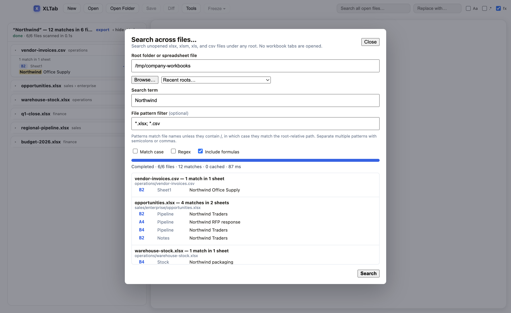
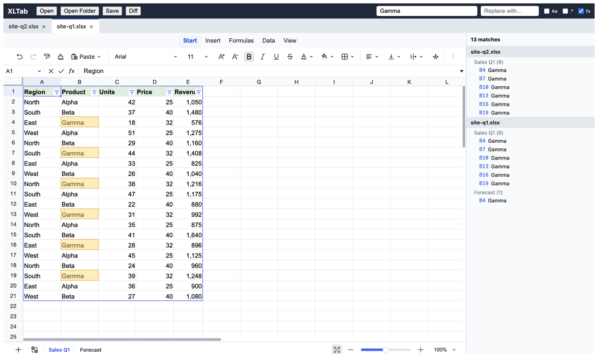

Features
Search first. Open exactly what you need.
Every capability below is in the shipping app — no roadmap promises. Start blank with New or Ctrl+N, open existing spreadsheets as tabs, or scan an entire root folder before opening anything at all.
01 · Workspace search
Search a root folder without opening a single workbook
Choose Tools → Search across files…, paste or browse to any root folder or spreadsheet file, and scan recursively. You do not need to open a folder workspace first.
- Independent root path — paste a path, browse for a folder, use a recent root, or reuse the current workspace root.
- Useful search controls — query text, values or formula fragments; optional case-sensitive and regex modes; file patterns such as
*.xlsx; reports/**. - Streams instead of freezing — progress, partial results and cancellation stay responsive across hundreds of files.
- Grouped evidence — file and folder hierarchy, per-sheet counts, cell references, formula markers and highlighted matched text.
- Preview before opening — inline row context keeps the real header row visible and highlights the hit cell.
- Open only the answer — clicking a hit lazily opens that workbook at the exact sheet and cell; an already-open workbook is activated instead of duplicated.
- Fast refinement — unchanged files are cached by path, size and modification time, and results can be exported as an xlsx evidence file.


02 · Open-workbook search
Search every open workbook at once
The top search bar is deliberately separate: it searches the workbooks you already have open, live as you type. Use workspace search for unopened files; use open-workbook search for the tabs in front of you.
- Results group by workbook and sheet, then jump to the exact tab, sheet and cell.
- Every matched cell can be highlighted, with per-sheet hit badges.
- Regex, case-sensitive and formula-text modes are available.
- Cross-workbook replace is available directly from the results panel.

03 · Workbook diff
Diff two workbooks cell-by-cell
Pick any two open tabs and XLTab compares them: sheets matched by name, cells classified as added, removed, or changed — values and formulas both. Color-coded like a code diff, with counts per sheet.
- Answer “what changed between the version I sent and the one that came back?”
- Navigate directly to differing cells instead of scanning sheet by sheet.
- Use it after root-folder search has identified the candidate files.

04 · Folder workspaces
Open a folder when you want a working set
Point XLTab at a folder and it scans recursively for spreadsheets — preserving your directory structure in a sidebar tree, skipping Excel lock files and non-spreadsheets. Files load lazily when clicked, or open them all as tabs at once.
- Use a folder workspace when you will browse, compare or edit a related set of files.
- Use Search across files… instead when you only need to find answers without opening the set.
- The two workflows complement each other: workspace search can reuse the current workspace root.

05 · Everyday essentials
Filter, sort, validate — like you expect
Column filter dropdowns work the way you know from Excel, and files that already have autofilters open with them active — and keep them when saved. Sorting, conditional formatting, data validation dropdowns, freeze panes, merged cells, number formats and styles are included.
- Autofilter round-trips through save.
- Conditional formatting and data validation are preserved.
- Search hits hidden by saved Excel filters are revealed when you jump to them.

06 · Create & calculate
Start blank, edit immediately, save as xlsx
Click New or press Ctrl+N to create a blank workbook with a ready-to-edit Sheet1. Save chooses the destination and writes a standard .xlsx file. Existing workbooks open as editable tabs with live formula recalculation.
- SUM, VLOOKUP, XLOOKUP, SUMIFS, INDEX/MATCH, IF chains and cross-sheet references recalculate as you edit.
- Formulas are stored as standard Excel formulas, including modern-function preservation.
- Formatting, merged cells, freeze panes, number formats and sheet structure round-trip through save.

Power tools
Batch spreadsheet work, without the cluttered ribbon
One Tools dialog keeps advanced operations simple: choose the tool, configure it, inspect a representative preview, then apply. Folder batch operations show progress, can be cancelled, skip existing outputs by default, and never overwrite source files.
Honest limits
What XLTab doesn't do
Pivot tables, charts, macros/VBA, Power Query, printing, and dependable legacy binary .xls editing. Workspace search can scan .xls content, but convert those files to .xlsx when you need to edit them. If your workbooks are data + formulas + formatting, XLTab is home. If they run on pivots and macros, use it alongside Excel — as the layer that searches and compares across everything.
Free. Offline. Two minutes to install.